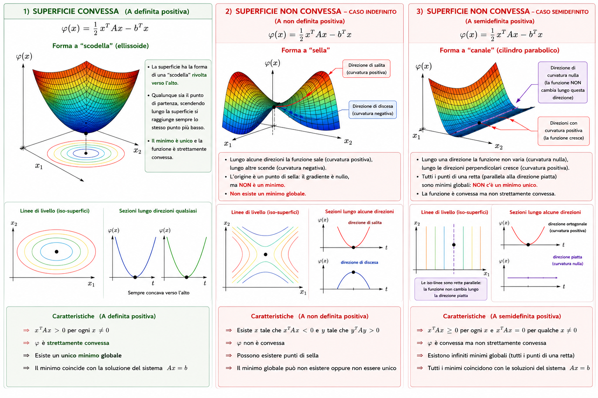
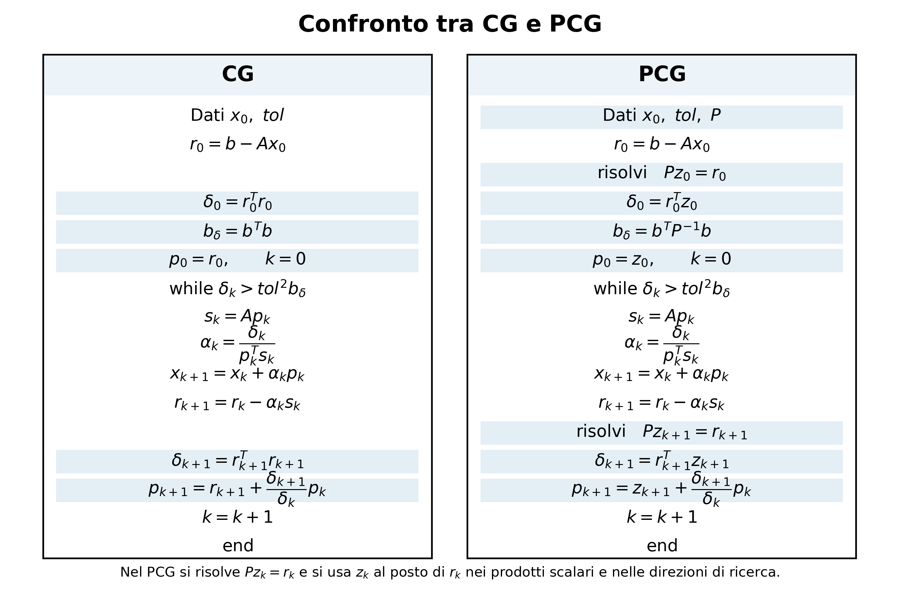

Metodi iterativi per sistemi lineari#
Questo notebook contiene una breve descrizione di alcuni metodi iterativi per la risoluzione di sistemi lineari ed integra quanto visto sui metodi diretti.
Argomenti:
perché introdurre metodi iterativi;
sistemi grandi e matrici sparse;
sistemi simmetrici definiti positivi;
metodi di discesa del gradiente;
metodo di massima discesa (steepest descent);
realizzazione efficiente del metodo di massima discesa;
metodo del gradiente coniugato;
norma dell’energia;
sottospazi di Krylov;
convergenza del metodo del gradiente coniugato;
precondizionamento.
import numpy as np
import math
import time
np.set_printoptions(precision=6, suppress=True)
1. Perché introdurre metodi iterativi?#
Nei capitoli precedenti abbiamo studiato metodi diretti per risolvere un sistema lineare
Un metodo diretto, come l’eliminazione di Gauss, la fattorizzazione LU o la fattorizzazione di Cholesky, cerca di arrivare alla soluzione esatta, a meno degli errori di arrotondamento, in un numero finito di operazioni.
Questi metodi sono fondamentali e restano spesso la scelta migliore. Tuttavia, in alcuni contesti diventano troppo costosi o poco flessibili. In particolare, può accadere che:
la matrice \(A\) sia molto grande;
la matrice \(A\) sia sparsa, cioè contenga moltissimi zeri;
non serva una soluzione estremamente accurata;
sia già disponibile una buona approssimazione iniziale;
la matrice \(A\) non sia disponibile esplicitamente, ma sia possibile calcolare rapidamente il prodotto \(Av\) per un vettore \(v\).
In questi casi può essere conveniente usare un metodo iterativo.
Idea generale#
Un metodo iterativo costruisce una successione di approssimazioni
dove \(x_0\) è una stima iniziale e \(x_k\) dovrebbe avvicinarsi alla soluzione esatta \(x\) del sistema.
L’idea è quindi:
A differenza di un metodo diretto, un metodo iterativo può essere interrotto quando l’approssimazione è considerata sufficientemente buona.
Un esempio vicino alle applicazioni gestionali#
Per comprendere perché possa essere utile risolvere un sistema lineare molto grande, consideriamo un esempio ispirato ad applicazioni di analisi delle reti e supporto alle decisioni aziendali.
Supponiamo di voler assegnare un punteggio di affidabilità a un insieme di aziende appartenenti alla stessa filiera produttiva. Per ogni azienda vogliamo determinare un valore che tenga conto sia delle sue caratteristiche intrinseche sia delle relazioni che essa ha con le altre aziende.
Indichiamo con
il vettore dei punteggi finali delle aziende e con
un vettore di punteggi iniziali, ottenuti ad esempio da indicatori economici o finanziari (fatturato, solidità patrimoniale, puntualità nei pagamenti, ecc.).
Naturalmente, il punteggio finale di un’azienda non dipende soltanto dalle sue caratteristiche, ma anche dalle aziende con cui essa intrattiene rapporti commerciali. Se un’azienda collabora prevalentemente con partner molto affidabili, è ragionevole che anche il suo punteggio aumenti.
Per descrivere queste relazioni introduciamo una matrice (B), i cui elementi misurano l’influenza esercitata dalle diverse aziende. Un possibile modello matematico è
dove il parametro \(0<\alpha<1\) stabilisce quanto peso attribuire alle relazioni rispetto alle caratteristiche individuali.
Questa equazione esprime il fatto che il punteggio finale è ottenuto sommando il punteggio iniziale al contributo proveniente dalle aziende collegate. Il vettore \(Bx\) rappresenta infatti l’effetto complessivo esercitato dalla rete di relazioni.
Poiché il vettore incognito \(x\) compare in entrambi i membri dell’equazione, per determinarlo dobbiamo risolvere un sistema lineare. Portando tutti i termini contenenti \(x\) al primo membro otteniamo
che è un sistema della forma
con
La soluzione del sistema fornisce quindi i punteggi finali di tutte le aziende, ottenuti considerando contemporaneamente le caratteristiche di ciascuna e le influenze provenienti dall’intera rete.
Nelle applicazioni reali il numero di aziende può essere molto elevato (anche centinaia di migliaia). Tuttavia ogni azienda è normalmente collegata soltanto a un numero limitato di altre aziende. Di conseguenza la matrice \(B\), e quindi anche la matrice \(A\), contiene prevalentemente elementi nulli ed è detta matrice sparsa.
In questo contesto i metodi diretti, come l’eliminazione di Gauss, possono diventare troppo costosi in termini di memoria e tempo di calcolo. I metodi iterativi, invece, sfruttano la struttura sparsa della matrice e consentono di ottenere una buona approssimazione della soluzione con un costo computazionale molto più contenuto.
# Esempio semplice: modello di punteggio con poche connessioni
alpha = 0.7
B = np.array([[0.0, 0.5, 0.0, 0.0],
[0.5, 0.0, 0.5, 0.0],
[0.0, 0.5, 0.0, 0.5],
[0.0, 0.0, 0.5, 0.0]])
c = np.array([1.0, 0.5, 0.2, 0.1])
A = np.eye(4) - alpha * B
x = np.linalg.solve(A, c)
print("A =")
print(A)
print("Soluzione x =", x)
print("Residuo ||b - Ax|| =", np.linalg.norm(c - A @ x))
A =
[[ 1. -0.35 0. 0. ]
[-0.35 1. -0.35 0. ]
[ 0. -0.35 1. -0.35]
[ 0. 0. -0.35 1. ]]
Soluzione x = [1.447631 1.278945 0.777927 0.372274]
Residuo ||b - Ax|| = 3.925231146709438e-17
2. Residuo ed errore#
Dato un vettore approssimato \(x_k\), definiamo il residuo come
Il residuo misura quanto \(x_k\) non soddisfa il sistema. Infatti:
se \(x_k\) è la soluzione esatta, allora \(Ax_k=b\) e quindi \(r_k=0\);
se \(r_k\) è piccolo, allora \(x_k\) soddisfa quasi il sistema.
L’errore è invece
dove \(x\) è la soluzione esatta. Il problema è che \(e_k\) non è direttamente calcolabile, perché non conosciamo \(x\).
Per questo motivo nei metodi iterativi si usa spesso il residuo come criterio di arresto. Un criterio comune è
3. Matrici simmetriche definite positive#
Il metodo principale che studieremo è il metodo del gradiente coniugato, indicato spesso con la sigla CG, dall’inglese Conjugate Gradient.
Il metodo CG si applica nella sua forma classica a sistemi
in cui \(A\) è simmetrica definita positiva.
Ricordiamo che una matrice reale quadrata \(A\) è:
simmetrica se \(A^T=A\);
definita positiva se
Queste ipotesi non sono un dettaglio tecnico: sono ciò che permette di interpretare il sistema lineare come un problema di minimizzazione.
4. Da sistema lineare a problema di minimizzazione#
Supponiamo che \(A\) sia simmetrica definita positiva. Consideriamo la funzione quadratica
Il gradiente di questa funzione è
Quindi i punti critici soddisfano
Risolvere il sistema lineare equivale dunque a trovare il minimo della funzione quadratica \(\varphi\).
Il fatto che \(A\) sia definita positiva garantisce che questo minimo sia unico.
Perché serve che \(A\) sia simmetrica definita positiva?#
La simmetria e la definitezza positiva hanno ruoli distinti.
La simmetria della matrice è necessaria perché permette di interpretare la risoluzione del sistema lineare come un problema di minimizzazione.
Infatti consideriamo la funzione
In generale, per una qualunque matrice \(A\), il gradiente della forma quadratica è
Di conseguenza,
Solo quando \(A\) è simmetrica, cioè \(A=A^T\), questa espressione si semplifica in
Pertanto i punti in cui il gradiente si annulla soddisfano
cioè coincidono esattamente con le soluzioni del sistema lineare.
Se invece \(A\) non è simmetrica, annullare il gradiente significa risolvere
che, in generale, è un sistema diverso da quello originale. Per questo motivo la funzione quadratica non rappresenta più il problema \(Ax=b\) in modo diretto e non può essere utilizzata come base per il metodo del gradiente coniugato.
La definita positività della matrice garantisce invece che il punto stazionario trovato sia effettivamente un minimo della funzione.
Infatti, se \(A\) è definita positiva, per ogni vettore non nullo \(x\) vale
Questa proprietà implica che la funzione
è strettamente convessa.
Geometricamente, nel caso di una sola variabile, una funzione convessa è rappresentata da una parabola con la concavità rivolta verso l’alto, come ad esempio \(y=x^2\). Essa possiede un unico punto di minimo.
Nel caso di due o più variabili la parabola viene sostituita da una superficie tridimensionale (o, più in generale, da un’ipersuperficie) che ha la forma di una scodella: qualunque sia il punto da cui si parte, spostandosi verso il basso si raggiunge sempre lo stesso punto più basso, che rappresenta il minimo della funzione.
Di conseguenza, il problema di minimizzare \(\varphi(x)\) ha un’unica soluzione, e tale soluzione coincide con la soluzione del sistema lineare \(Ax=b\).
Se invece la matrice non fosse definita positiva, la superficie potrebbe assumere forme molto diverse: potrebbe avere direzioni in cui scende indefinitamente, oppure presentare punti di sella (simili a una sella da cavallo), nei quali il gradiente è nullo ma che non sono punti di minimo. In queste situazioni non è più possibile interpretare la soluzione del sistema come il minimo di una funzione convessa, e il metodo del gradiente coniugato perde il fondamento teorico su cui si basa.

5. Metodi di discesa del gradiente#
Poiché vogliamo minimizzare \(\varphi(x)\), una strategia naturale è muoversi lungo una direzione di discesa.
Il gradiente indica la direzione di massima crescita della funzione. Quindi l’opposto del gradiente indica una direzione di discesa.
Poiché
l’opposto del gradiente è proprio il residuo:
La forma generale di un metodo di discesa del gradiente è quindi
dove \(\alpha_k\) è un numero reale positivo, detto passo.
6. Metodo di massima discesa (steepest descent)#
Nel metodo di massima discesa scegliamo \(\alpha_k\) in modo ottimale lungo la direzione \(r_k\).
Più precisamente, vogliamo minimizzare la funzione di una variabile
Sostituendo nella funzione quadratica:
Derivando rispetto ad \(\alpha\) e imponendo che la derivata sia nulla si ottiene
Quindi il metodo diventa
Nota sul denominatore#
Il denominatore
è positivo se \(r_k\neq 0\), perché \(A\) è definita positiva.
Quindi il passo \(\alpha_k\) è ben definito finché non abbiamo già raggiunto la soluzione.
7. Realizzazione efficiente del metodo di massima discesa#
Una scrittura diretta del metodo potrebbe far pensare di dover calcolare molte volte prodotti del tipo \(Av\). In realtà, è importante organizzare i calcoli per riutilizzare ciò che è già stato calcolato.
Supponiamo di conoscere \(x_k\) e \(r_k\). Per calcolare il passo serve
Definiamo allora
A questo punto:
Dopo aver aggiornato
possiamo aggiornare il residuo senza ricalcolare da zero \(b-Ax_{k+1}\).
Infatti:
Questa formula è molto importante dal punto di vista computazionale.
Pseudocodice efficiente: massima discesa#
Input: matrice o funzione per il prodotto \(Av\), termine noto \(b\), stima iniziale \(x_0\), tolleranza tol.
Calcola
Per \(k=0,1,2,\ldots\) finché \(\|r_k\|>\text{tol}\,\|b\|\):
calcola un solo prodotto matrice-vettore
\[ s_k=A r_k; \]calcola
\[ \alpha_k=\frac{r_k^T r_k}{r_k^T s_k}; \]aggiorna la soluzione
\[ x_{k+1}=x_k+\alpha_k r_k; \]aggiorna il residuo usando il vettore \(s_k\) già disponibile
\[ r_{k+1}=r_k-\alpha_k s_k. \]
Osservazione: il residuo non viene ricalcolato come \(b-Ax_{k+1}\), perché questo richiederebbe un ulteriore prodotto matrice-vettore.
Costo computazionale per iterazione#
Per una matrice densa \(A\in\mathbb{R}^{n\times n}\):
un prodotto matrice-vettore \(Av\) costa circa \(O(n^2)\) operazioni;
un prodotto scalare \(u^Tv\) costa \(O(n)\) operazioni;
una somma di vettori costa \(O(n)\) operazioni.
Per una matrice sparsa, il costo di \(Av\) è circa
dove \(\operatorname{nnz}(A)\) è il numero di elementi non nulli di \(A\).
Quindi, se \(A\) è grande, il prodotto matrice-vettore è quasi sempre l’operazione dominante.
Per questo motivo è essenziale organizzare il metodo in modo che ogni iterazione richieda un solo prodotto matrice-vettore.
def steepest_descent(A, b, x0=None, tol=1e-8, maxit=1000):
n = len(b)
if x0 is None:
x = np.zeros(n)
else:
x = x0.astype(float).copy()
r = b - A @ x
b_norm = np.linalg.norm(b)
history = [np.linalg.norm(r) / b_norm]
for k in range(maxit):
if np.linalg.norm(r) <= tol * b_norm:
break
s = A @ r
alpha = (r @ r) / (r @ s)
x = x + alpha * r
r = r - alpha * s
history.append(np.linalg.norm(r) / b_norm)
return x, k + 1, np.array(history)
8. Limite del metodo di massima discesa#
Il metodo di massima discesa è semplice e intuitivo, ma può essere lento.
Il problema è che, quando le curve di livello della funzione quadratica sono molto allungate, il metodo tende a procedere a zig-zag.
In termini matriciali, questo accade quando il numero di condizionamento
è grande.
In questi casi servono molte iterazioni per ridurre l’errore di un fattore fissato.
Il metodo del gradiente coniugato nasce proprio per superare questo limite.
9. Metodo del gradiente coniugato#
Il metodo del gradiente coniugato ha la forma generale
dove:
\(p_k\) è la direzione di ricerca;
\(\alpha_k\) è il passo lungo quella direzione.
Nel metodo di massima discesa si usa sempre
Nel metodo del gradiente coniugato, invece, la direzione \(p_k\) non coincide sempre con il residuo. Solo all’inizio si pone
Poi le direzioni vengono costruite in modo da essere coniugate rispetto ad \(A\).
10. Direzioni coniugate#
Due vettori \(p_i\) e \(p_j\) si dicono coniugati rispetto ad \(A\) se
Questa condizione assomiglia all’ortogonalità classica, ma il prodotto scalare standard \(p_i^Tp_j\) viene sostituito da un prodotto pesato dalla matrice \(A\).
L’idea del metodo CG è costruire direzioni di ricerca che non “rovinino” il lavoro fatto nelle iterazioni precedenti.
Ogni nuova direzione aggiunge informazione nuova rispetto alle precedenti.
11. Norma dell’energia#
Data una matrice simmetrica definita positiva \(B\), si definisce la norma dell’energia associata a \(B\) come
Questa è davvero una norma perché \(B\) è simmetrica definita positiva.
Vediamo perché.
Positività: se \(x\neq 0\), allora \(x^TBx>0\), quindi \(\|x\|_B>0\).
Nullità solo nel vettore nullo: se \(x=0\), allora \(\|x\|_B=0\).
Omogeneità: per ogni scalare \(\alpha\),
Disuguaglianza triangolare: deriva dal fatto che \(x^TBy\) definisce un prodotto scalare quando \(B\) è simmetrica definita positiva.
Se \(B\) non fosse definita positiva, potrebbe esistere un vettore non nullo con \(x^TBx\leq 0\), e quindi la radice quadrata non definirebbe una lunghezza.
Se \(B\) non fosse simmetrica, l’espressione \(x^TBy\) non avrebbe le proprietà di un prodotto scalare.
Interpretazione per il metodo CG#
Nel metodo del gradiente coniugato non si minimizza semplicemente la norma euclidea dell’errore
Si minimizza invece la norma dell’energia
dove
Questa norma è naturale perché è legata alla funzione quadratica
12. Sottospazi di Krylov#
Dato un vettore iniziale \(r_0\) e una matrice \(A\), il sottospazio di Krylov di ordine \(k\) è
Il metodo CG cerca la soluzione approssimata nello spazio
Questo significa che, dopo \(k\) iterazioni, la correzione applicata a \(x_0\) è una combinazione lineare dei vettori
L’idea intuitiva è che ogni nuovo prodotto con \(A\) porta nuova informazione sul sistema.
13. Algoritmo del gradiente coniugato#
Input: matrice o funzione per il prodotto \(Av\), termine noto \(b\), stima iniziale \(x_0\), tolleranza tol.
Si inizializza:
Poi, per \(k=0,1,2,\ldots\), finché
si calcola:
Anche qui ogni iterazione richiede un solo prodotto matrice-vettore, cioè il calcolo di \(s_k=Ap_k\).
Commento riga per riga#
\(r_0=b-Ax_0\): misura quanto la stima iniziale non soddisfa il sistema.
\(p_0=r_0\): la prima direzione coincide con quella di massima discesa.
\(\delta_k=r_k^Tr_k\): è il quadrato della norma euclidea del residuo.
\(s_k=Ap_k\): è il prodotto matrice-vettore necessario per calcolare il passo.
\(\alpha_k\): sceglie il passo ottimale lungo la direzione \(p_k\).
\(x_{k+1}\): aggiorna la soluzione approssimata.
\(r_{k+1}\): aggiorna il residuo senza ricalcolare \(b-Ax_{k+1}\) da zero.
\(p_{k+1}\): costruisce una nuova direzione combinando il nuovo residuo con la direzione precedente.
La formula per \(p_{k+1}\) è ciò che rende il metodo diverso dalla massima discesa: non si riparte ogni volta dalla direzione del residuo, ma si mantiene memoria della direzione precedente.
def conjugate_gradient(A, b, x0=None, tol=1e-8, maxit=None):
n = len(b)
if x0 is None:
x = np.zeros(n)
else:
x = x0.astype(float).copy()
if maxit is None:
maxit = n
r = b - A @ x
p = r.copy()
delta = r @ r
delta_b = b @ b
history = [math.sqrt(delta / delta_b)]
for k in range(maxit):
if delta <= tol**2 * delta_b:
break
s = A @ p
alpha = delta / (p @ s)
x = x + alpha * p
r = r - alpha * s
delta_new = r @ r
beta = delta_new / delta
p = r + beta * p
delta = delta_new
history.append(math.sqrt(delta / delta_b))
return x, k + 1, np.array(history)
14. Esempio numerico piccolo#
Consideriamo il sistema
con
La matrice \(A\) è simmetrica definita positiva. La soluzione esatta è
Usiamo il metodo CG partendo da \(x_0=0\).
A = np.array([[7., 3., 1.],
[3., 10., 2.],
[1., 2., 15.]])
b = np.array([28., 31., 22.])
x_cg, it_cg, hist_cg = conjugate_gradient(A, b, tol=1e-12, maxit=10)
print("Soluzione CG:", x_cg)
print("Iterazioni:", it_cg)
print("Residuo relativo finale:", hist_cg[-1])
print("Soluzione esatta:", np.linalg.solve(A, b))
Soluzione CG: [3. 2. 1.]
Iterazioni: 4
Residuo relativo finale: 5.798384159287766e-17
Soluzione esatta: [3. 2. 1.]
In aritmetica esatta, il metodo CG trova la soluzione di un sistema \(n\times n\) in al più \(n\) iterazioni.
Nell’esempio precedente \(n=3\), quindi non sorprende che il metodo arrivi alla soluzione in pochissime iterazioni.
Naturalmente, per sistemi così piccoli useremmo un metodo diretto. L’esempio serve solo a vedere il funzionamento dell’algoritmo.
15. Convergenza del metodo CG#
Per un sistema
con \(A\) simmetrica definita positiva, il metodo CG ha le seguenti proprietà fondamentali.
L’iterato \(x_k\) minimizza la norma dell’energia dell’errore nello spazio
In aritmetica esatta, la soluzione viene raggiunta in al più \(n\) iterazioni.
Se \(A\) ha solo \(m\) autovalori distinti, la soluzione viene raggiunta in al più \(m\) iterazioni.
Il numero di iterazioni necessario per ridurre l’errore dipende dal numero di condizionamento \(\kappa(A)\).
Una stima classica è
Questa stima mostra che il comportamento del CG è legato a \(\sqrt{\kappa(A)}\), mentre il metodo di massima discesa è più direttamente penalizzato da \(\kappa(A)\).
Interpretazione della stima#
Se \(\kappa(A)\) è piccolo, allora
è significativamente minore di \(1\), quindi l’errore si riduce rapidamente.
Se invece \(\kappa(A)\) è molto grande, il rapporto è vicino a \(1\) e la convergenza può diventare lenta.
La stima è spesso pessimistica: nella pratica il metodo CG può convergere più velocemente, soprattutto quando gli autovalori di \(A\) sono raggruppati in pochi intervalli.
16. Confronto tra massima discesa e gradiente coniugato#
Vediamo un confronto numerico su una matrice simmetrica definita positiva con condizionamento non troppo piccolo.
# Costruiamo una matrice simmetrica definita positiva con autovalori diversi
Q, _ = np.linalg.qr(np.random.default_rng(0).normal(size=(20, 20)))
eigvals = np.linspace(1, 100, 20)
A = Q @ np.diag(eigvals) @ Q.T
x_true = np.ones(20)
b = A @ x_true
x_sd, it_sd, hist_sd = steepest_descent(A, b, tol=1e-8, maxit=5000)
x_cg, it_cg, hist_cg = conjugate_gradient(A, b, tol=1e-8, maxit=5000)
print("Iterazioni massima discesa:", it_sd)
print("Residuo relativo finale massima discesa:", hist_sd[-1])
print("Iterazioni CG:", it_cg)
print("Residuo relativo finale CG:", hist_cg[-1])
Iterazioni massima discesa: 596
Residuo relativo finale massima discesa: 9.60459590352817e-09
Iterazioni CG: 21
Residuo relativo finale CG: 4.77802697250283e-16
Il metodo CG tende a richiedere molte meno iterazioni perché le sue direzioni di ricerca sono costruite per non ripetere il lavoro già fatto.
Invece, la massima discesa può continuare a oscillare tra direzioni simili, soprattutto quando il problema è mal condizionato.
17. Precondizionamento#
Quando \(\kappa(A)\) è grande, anche il metodo CG può diventare lento.
L’idea del precondizionamento è trasformare il sistema originale in un altro sistema equivalente, ma più favorevole dal punto di vista numerico.
Osservazione.
Il metodo del gradiente coniugato converge più rapidamente quando gli autovalori di (A) sono ben raggruppati. Intuitivamente, questo significa che il metodo riesce a ridurre l’errore in molte direzioni contemporaneamente. Il precondizionamento ha proprio questo obiettivo: trasformare il sistema in uno equivalente in cui gli autovalori siano più concentrati, idealmente vicini a (1).
Per farlo si sceglie una matrice \(P\) che soddisfi due requisiti:
deve essere simile ad \(A\), cioè deve approssimarne il comportamento;
deve essere molto più semplice da utilizzare, nel senso che risolvere sistemi del tipo
deve essere molto meno costoso che risolvere direttamente
Perché vogliamo che \(P\) approssimi \(A\)?
L’obiettivo non è sostituire il sistema con uno completamente diverso, ma correggere le caratteristiche della matrice che rallentano la convergenza del metodo iterativo. Se \(P\) è una buona approssimazione di \(A\), allora il prodotto
risulta “più vicino” alla matrice identità (I). Di conseguenza i suoi autovalori tendono a concentrarsi attorno a \(1\) e il numero di condizionamento diminuisce.
Poiché la velocità di convergenza del metodo del gradiente coniugato dipende dal numero di condizionamento della matrice, lavorare con il sistema precondizionato richiede in genere un numero molto inferiore di iterazioni.
Naturalmente non conviene scegliere \(P=A\): in questo caso il sistema sarebbe risolto in un solo passo, ma per applicare il precondizionatore bisognerebbe invertire proprio la matrice che si voleva evitare di trattare direttamente. Occorre quindi trovare un compromesso: \(P\) deve essere sufficientemente simile ad \(A\) da migliorare il condizionamento, ma abbastanza semplice da rendere economica la risoluzione dei sistemi con \(P\).
Metodo del gradiente coniugato precondizionato#
Nella sezione precedente abbiamo introdotto l’idea del precondizionamento: invece di risolvere direttamente
si cerca di trasformare il problema in un sistema equivalente ma numericamente più favorevole.
Ricordiamo che il precondizionatore (P) deve essere scelto in modo da soddisfare due requisiti:
deve approssimare (A), così da migliorare le proprietà numeriche del problema;
deve essere facile da usare, cioè deve essere economico risolvere sistemi del tipo
Il metodo del gradiente coniugato precondizionato, o PCG (Preconditioned Conjugate Gradient), è la versione del CG che sfrutta questa idea.
Perché il precondizionamento può accelerare il CG?#
Il metodo del gradiente coniugato converge più rapidamente quando la matrice del sistema è ben condizionata o, più in generale, quando i suoi autovalori sono ben raggruppati.
Osservazione.
Il metodo del gradiente coniugato converge più rapidamente quando gli autovalori di \(A\) sono ben raggruppati. Intuitivamente, questo significa che il metodo riesce a ridurre l’errore in molte direzioni contemporaneamente. Il precondizionamento ha proprio questo obiettivo: trasformare il sistema in uno equivalente in cui gli autovalori siano più concentrati, idealmente vicini a (1).
Infatti, se \(P\) approssima bene \(A\), allora la matrice
è più vicina alla matrice identità \(I\). Nel caso ideale \(P=A\), avremmo
e tutti gli autovalori sarebbero uguali a \(1\). Questo rappresenta la situazione migliore possibile dal punto di vista della convergenza.
\(A\), cioè proprio il problema originale. Per questo motivo si cerca un compromesso: \(P\) deve essere abbastanza simile ad \(A\) da migliorare la convergenza, ma abbastanza semplice da rendere economica la risoluzione di \(Pz=r\).
Sistema precondizionato#
Formalmente, il sistema precondizionato può essere scritto come
L’obiettivo è che la matrice precondizionata
sia meglio condizionata di \(A\), oppure abbia autovalori più concentrati.
C’è però un aspetto teorico importante. Anche se \(A\) e \(P\) sono simmetriche definite positive, la matrice \(P^{-1}A\), in generale, non è simmetrica. Per mantenere il collegamento con la teoria del gradiente coniugato, si considera allora una forma equivalente del sistema:
Questa forma è utile perché la matrice
è ancora simmetrica definita positiva.
Nella pratica, però, non si calcolano mai esplicitamente né \(P^{-1}\) né \(P^{-1/2}\). L’algoritmo viene scritto in modo da richiedere solo la soluzione di sistemi con matrice \(P\).
Il residuo precondizionato#
Nel CG standard, le direzioni di ricerca vengono costruite a partire dal residuo
Nel PCG, invece, prima si trasforma il residuo risolvendo
Il vettore
si chiama residuo precondizionato.
L’idea è che \(z_k\) contenga la stessa informazione di \(r_k\), ma corretta usando il precondizionatore \(P\). In questo modo il metodo costruisce direzioni di ricerca più adatte alla geometria del problema.
Confronto tra CG e PCG#
Il PCG non è un algoritmo completamente diverso dal CG. La struttura è quasi la stessa: cambiano solo alcuni punti, nei quali il residuo \(r_k\) viene sostituito dal residuo precondizionato \(z_k\).

Costo di una iterazione del PCG#
Una iterazione del CG richiede essenzialmente:
un prodotto matrice-vettore (Ap_k);
alcuni prodotti scalari;
alcune somme di vettori.
Nel PCG si aggiunge una nuova operazione:
Quindi ogni iterazione del PCG è leggermente più costosa di una iterazione del CG.
Il metodo è conveniente solo se questa spesa aggiuntiva viene compensata da una riduzione significativa del numero di iterazioni. In altre parole:
se \(P\) è troppo semplice, costa poco ma migliora poco la convergenza;
se \(P\) è troppo complessa, migliora molto la convergenza ma costa troppo applicarla;
un buon precondizionatore deve stare nel mezzo.
Esempi di precondizionatori#
La scelta del precondizionatore dipende dal problema e dalla struttura della matrice.
Un primo esempio è il precondizionatore di Jacobi, in cui \(P\) è la matrice diagonale ottenuta prendendo solo gli elementi diagonali di \(A\). Questo precondizionatore è molto economico, perché risolvere
significa semplicemente dividere ogni componente di \(r\) per il corrispondente elemento diagonale.
Esistono poi precondizionatori più sofisticati, basati su fattorizzazioni incomplete.
Un esempio importante è la fattorizzazione di Cholesky incompleta. Se \(A\) è simmetrica definita positiva, la fattorizzazione di Cholesky completa scrive
Per matrici grandi e sparse, però, il fattore \(G\) può diventare molto più denso di \(A\). Questo fenomeno è detto fill-in e può rendere il metodo costoso sia in memoria sia in tempo di calcolo.
La Cholesky incompleta costruisce invece un fattore sparso \(F\), più economico, e usa come precondizionatore
In questo modo \(P\) non coincide esattamente con \(A\), ma ne approssima il comportamento mantenendo una struttura sparsa.
Nelle applicazioni questo può ridurre notevolmente il numero di iterazioni, anche se ogni iterazione diventa leggermente più costosa.
Osservazione finale.
Il precondizionamento non è un dettaglio tecnico secondario: per molti problemi di grandi dimensioni è una parte essenziale dei metodi iterativi. Non esiste però un precondizionatore migliore in assoluto. La scelta dipende dalla struttura della matrice e dal problema che ha generato il sistema lineare.
18. Riassunto#
I metodi iterativi sono utili quando i sistemi lineari sono grandi, sparsi o quando è sufficiente una soluzione approssimata.
Il metodo di massima discesa nasce dall’interpretazione del sistema simmetrico definito positivo come problema di minimizzazione della funzione quadratica
Il metodo CG migliora la massima discesa costruendo direzioni di ricerca coniugate rispetto ad \(A\).
Le sue proprietà principali sono:
usa un solo prodotto matrice-vettore per iterazione;
non richiede di memorizzare necessariamente tutta la matrice, se è disponibile una funzione che calcola \(Av\);
minimizza l’errore nella norma dell’energia su sottospazi di Krylov crescenti;
in aritmetica esatta converge in al più \(n\) iterazioni;
nella pratica spesso converge molto prima;
può essere accelerato tramite precondizionamento.
19. Esercizi proposti#
Verificare che la matrice
è simmetrica definita positiva.
Per il sistema
eseguire manualmente una iterazione del metodo di massima discesa partendo da \(x_0=(0,0)^T\).
Implementare il metodo CG e confrontarlo con
np.linalg.solvesu una matrice simmetrica definita positiva generata casualmente.Provare a modificare gli autovalori della matrice dell’esempio numerico e osservare come cambia il numero di iterazioni del metodo CG.
Spiegare perché, in un metodo iterativo per matrici sparse, il prodotto matrice-vettore è spesso più importante della fattorizzazione della matrice.